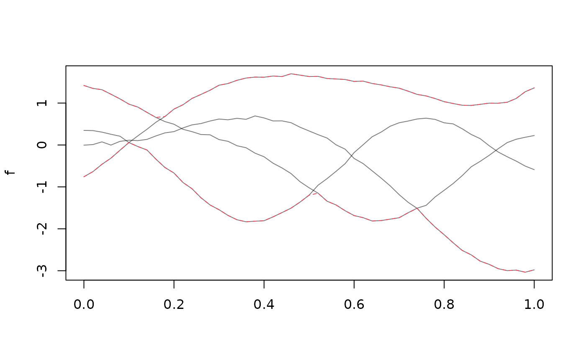
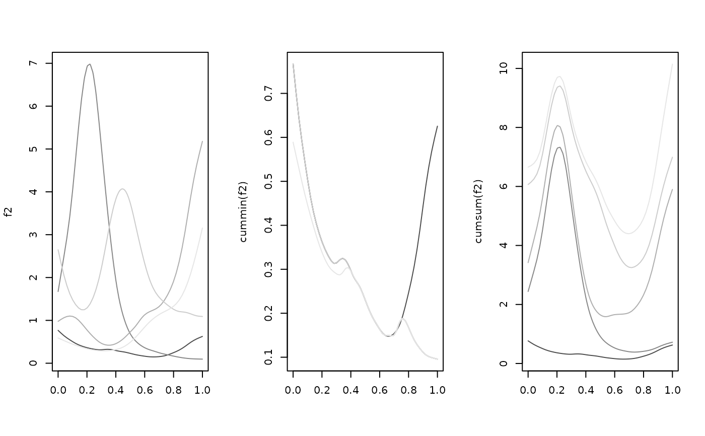

These methods and operators mostly work arg-value-wise on tf objects, see
?groupGeneric for implementation details.
Usage
# S3 method for tf
Ops(e1, e2)
# S3 method for tfd
==(e1, e2)
# S3 method for tfd
!=(e1, e2)
# S3 method for tfb
==(e1, e2)
# S3 method for tfb
!=(e1, e2)
# S3 method for tfd
Ops(e1, e2)
# S3 method for tfb
Ops(e1, e2)
# S3 method for tfd
Math(x, ...)
# S3 method for tfb
Math(x, ...)
# S3 method for tf
Summary(...)
# S3 method for tfd
cummax(...)
# S3 method for tfd
cummin(...)
# S3 method for tfd
cumsum(...)
# S3 method for tfd
cumprod(...)
# S3 method for tfb
cummax(...)
# S3 method for tfb
cummin(...)
# S3 method for tfb
cumsum(...)
# S3 method for tfb
cumprod(...)Arguments
- e1
an
tfor a numeric vector- e2
an
tfor a numeric vector- x
an
tf- ...
tf-objects (not used forMathgroup generic)
Details
See examples below. Equality checks of functional objects are even more iffy
than usual for computer math and not very reliable. Note that max and min
are not guaranteed to be maximal/minimal over the entire domain, only on the
evaluation grid used for computation. With the exception of addition and
multiplication, operations on tfb-objects first evaluate the data on their
arg, perform computations on these evaluations and then convert back to an
tfb- object, so a loss of precision should be expected -- especially so for
small spline bases and/or very wiggly data.
Examples
set.seed(1859)
f <- tf_rgp(4)
2 * f == f + f
#> 1 2 3 4
#> TRUE TRUE TRUE TRUE
sum(f) == f[1] + f[2] + f[3] + f[4]
#> [1] TRUE
log(exp(f)) == f
#> 1 2 3 4
#> TRUE TRUE TRUE TRUE
plot(f, points = FALSE)
lines(range(f), col = 2, lty = 2)

f2 <- tfb(tf_rgp(5), k = 50)
#> Percentage of input data variability preserved in basis representation
#> (per functional observation, approximate):
#> Min. 1st Qu. Median Mean 3rd Qu. Max.
#> 99.70 99.80 99.90 99.86 99.90 100.00
layout(t(1:2))
plot(f2, col = 1:5)
plot(cumsum(f2), col = 1:5)

# use ?tf_integrate for "function-wise" integrals i.e., weighted cumulative sums...